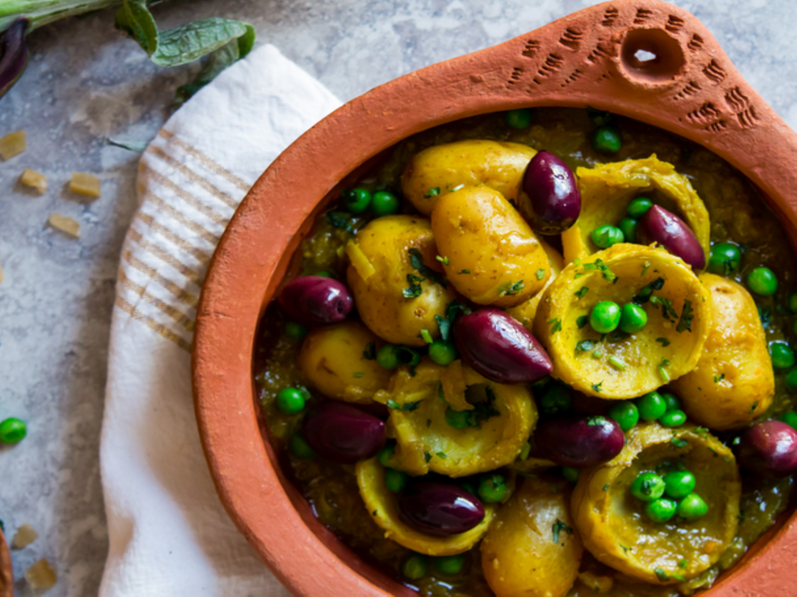

Artichoke Tagine with Peas Baby Potatoes and Preserved Lemon (vegan)
This tagine has green peas, plenty of spices, olives, and preserved lemon! It's satisfying, fragrant, citrusy and only takes one hour to prepare!
Ingredients:
- 10 Artichokes or Frozen or Canned Artichoke Bottoms
- 1 Lemon, juiced
- 2 Tbsp Extra-Virgin Olive Oil
- 2 Large Onions, chopped
- 2 cloves Garlic, finely chopped
- 1/2 tsp Ground Turmeric
- 1/2 tsp Ground Ginger
- 3/4 tsp Salt
- 1/4 tsp Ground Black Pepper
- 1 1/2 cups Vegetable Stock
- 2 2/3 cups Baby Potatoes
- 1 Medium Preserved Lemon
- 1 1/3 cups Green Peas
- 1 cup Red-Brown Olives
- Fresh Cilantro, chopped (to taste)
Ingredients
Step 1
First, let's prepare the artichoke bottoms (if you are using fresh
artichokes).
Since artichoke flesh will start to discolor as soon as you pare
away the skin
, fill a large bowl with cold water and add the
juice of Lemon (1) before you begin.
Dropping the prepared artichoke bottoms in the lemon water wiil slow
down the discoloration.
Step 2
Pull back the outer leaves of each Artichokes (10) until they break
at the base.
Keep removing leaves until you reach the pale yellow-green cone of
tender inner leaves.
Step 3
With a sharp knife, slice off all but one inch of the stem.
Step 4
With a small knife, pare the stem and the base, removing any dark
green parts.
If you like, cut the stem and base in half.
Step 5
With a melon baller or a spoon, scoop out and discard the hairy
choke and prickly leaves inside.
Immediately drop the trimmed artichoke into the lemon water to stop
them from browning. Repeat with the other 9 artichokes.
Step 6
In a large casserole, heat the olive Extra-Virgin Olive Oil (2 Tbsp)
and add the Onions (2) over medium heat.
Cover with a lid and leave the onions until they are soft and
translucent, about 10 minutes.
Step 7
Add the Garlic (2 cloves) , Ground Turmeric (1/2 tsp) , Ground
Ginger (1/2 tsp) , Salt (3/4 tsp) , Ground Black Pepper (1/4 tsp)
, Vegetable Stock (1 1/2 cups) . Cover with a lid and leave to
simmer gently for 30 minutes.
Step 8
Meanwhile, remove the flesh from the Preserved Lemon (1) and finely chop the lemon (discard the flesh).
Step 9
Add the Baby Potatoes (2 2/3 cups) , the Artichoke Bottoms, and the
medium preserved lemon to the casserole and
cover with a lid for 20 - 25 minutes, until both the artichoke and
the potatoes are nicely cooked and soft.
Step 10
Serve warm with a side of couscous or crusty bread. Top with Red-Brown Olives (1 cup) and Fresh Cilantro (to taste).